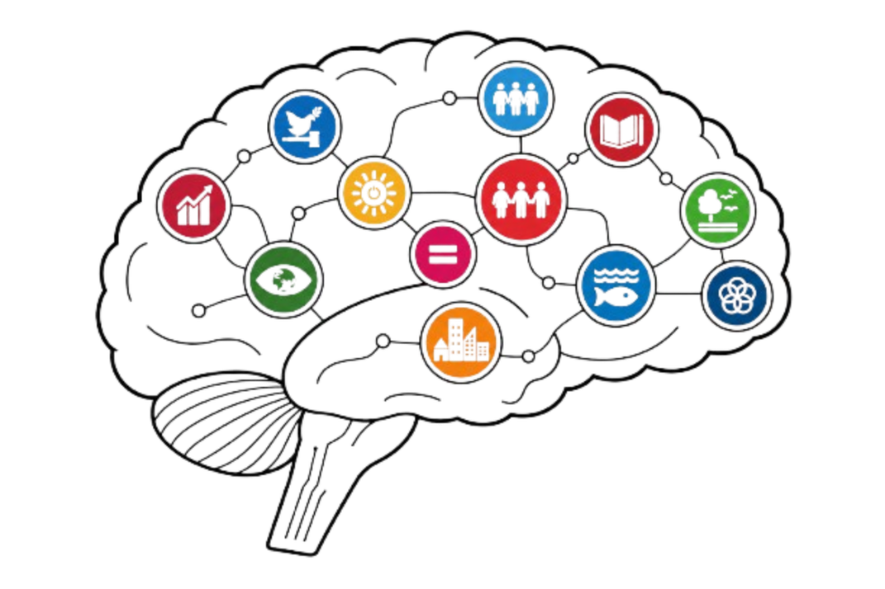

An AI-powered gamified journey across six of Thailand's most urgent sustainable-development frontlines — one mission per region. Investigate a real crisis, weigh a genuine ethical trade-off, decide, act, and defend your reasoning — building English, critical thinking, and ethical judgment inseparably. Pass a region to earn its SDG Keystone; six Keystones unlock your Voice for Change.
A new innovation — classroom-grounded and pilot-ready, built to augment the course, never to replace it.
FUTUREPROOF runs alongside the existing Design-Thinking final project in LALA109 as a semester-long companion. While students develop that project, FUTUREPROOF gives them sustained exposure to the SDGs in action within Thailand's own contexts — so the two reinforce each other rather than compete.
The idea grew directly out of teaching English for Digital Communication Skills, where students arrive with advanced English proficiency (evidenced by their TCAS English entrance scores). For these learners the goal is no longer to teach English — it is to give them the space and the stakes to use it: to grow critical and analytical thinking, empathy and altruism, leadership, resilience and perseverance, ethical judgement, problem-solving, and digital literacy, citizenship, and intelligence — and to turn those capacities into ideas that improve the well-being of Thai communities, with regional and global reach.
A first pilot with Mahidol University students is scheduled before public launch. It has not begun for this submission only because of the semester break and because the full platform is still being completed. What you are evaluating is therefore not a story about past results — it is an auditable, classroom-grounded design, ready to generate evidence the moment the cohort begins.
FUTUREPROOF reframes English education as global citizenship. Students don't study English to pass a test — they use it to cross Thailand, region by region: investigating a real crisis, weighing a genuine ethical trade-off where no option is clean, and defending their reasoning under pressure. The language is inseparable from the judgment.
A short diagnostic sets your reading tier. Every dossier is pre-written at three registers — same facts, same decision, different language. Reading meets you at i+1; audio stays authentic, scaffolded by captions. The asymmetry is SLA-correct, and you're shown why.
Every region runs the same five-stage arc — Brief · Probe · Decide · Act · Debrief. The higher-order moves repeat across six contexts until they become habit, not a one-off. Full creation is reserved for the capstone.
Six SDG Keystones unlock the capstone: one concrete proposal for a real Thai community, in your own voice. Recorded, uploaded, or designed — teacher-graded, and, with consent, carried to a real audience.
One mission per Thai region — a real, unresolved SDG trade-off, taken in any order. Each runs the same five-stage arc; passing earns that region's Keystone. Three are fully playable now; all six are documented to production depth.
A city secures its dry-season water by deepening the municipal wellfield — and accelerates the aquifer drawdown the next generation inherits.
เมืองเดิมพันน้ำหน้าแล้งด้วยการเจาะบ่อบาดาลเทศบาลให้ลึกลงไปอีก แต่ยิ่งเร่งให้ชั้นน้ำใต้ดินเหือดหาย แล้วคนรุ่นหลังจะเหลืออะไร?
Clean-air enforcement protects Chiang Mai's lungs — but criminalises upland farmers who burn to survive, with no funded alternative.
อากาศสะอาดเพื่อปอดของคนเชียงใหม่ ต้องแลกด้วยการผลักเกษตรกรบนดอยที่เผาเพื่ออยู่รอดให้กลายเป็นผู้กระทำผิด ทั้งที่ยังไม่มีทางเลือกใดมารองรับ
A monsoon-flood corridor shields 80,000 commuters — but displaces the klong-side households who have lived on the water for generations.
แนวกั้นน้ำท่วมช่วงมรสุมปกป้องผู้สัญจรกว่าแปดหมื่นชีวิต แต่ก็ผลักให้ชุมชนริมคลองที่ผูกพันกับสายน้ำมาทั้งชีวิตต้องจากบ้านไป
An Andaman tourism quota lets a stressed reef recover — but cuts the income of the small dive operators who depend on it. Documented.
โควตานักท่องเที่ยวให้แนวปะการังอันดามันที่บอบช้ำได้หายใจอีกครั้ง แต่ก็ตัดสายรายได้ของผู้ประกอบการดำน้ำรายเล็กที่ฝากชีวิตไว้กับท้องทะเล
Every child has a right to learn — but at Mae Sot, legal status, language and scarce resources collide for migrant and stateless children. Documented.
เด็กทุกคนมีสิทธิที่จะได้เรียน แต่ที่แม่สอด สถานะทางกฎหมาย ภาษา และทรัพยากรอันจำกัด กลับมาขวางอนาคตของเด็กข้ามชาติและเด็กไร้รัฐ
The Eastern Economic Corridor draws working-age labour away — leaving villages of elders and grandchildren as rural healthcare thins. Documented.
ระเบียงเศรษฐกิจตะวันออกดูดแรงงานวัยทำงานออกจากหมู่บ้าน ทิ้งไว้เพียงผู้เฒ่าและเด็กเล็ก ขณะที่บริการสุขภาพในชนบทค่อย ๆ จางหาย
Six SDG Keystones unlock the capstone. The brief: having walked all six frontlines, propose one concrete action for a real Thai community — and address a real audience, not the teacher.
Submit it your way — record live, upload audio or video, or design it in Canva. The teacher grades it holistically (Rubric A); with consent it travels to the public Hall of Voices and, optionally, a real Thai youth SDG forum. AI scaffolded every step here — the summative judgment of a human voice stays human.
Read the land. Absorb the region, the people, and the trade-off — at your reading tier.
อ่านพื้นที่ให้ขาด ซึมซับทั้งภูมิภาค ผู้คน และทางเลือกที่ต้องแลก — ในระดับการอ่านที่พอดีกับคุณ
Question the sources. Weigh four authentic stakeholder voices and conflicting evidence.
ตั้งคำถามกับแหล่งข้อมูล ชั่งน้ำหนักเสียงจริงของผู้มีส่วนได้ส่วนเสียทั้งสี่ฝ่าย ท่ามกลางหลักฐานที่ขัดแย้งกัน
Hold the line. Choose under a real trade-off — and calibrate your confidence honestly.
ยืนหยัดในจุดยืน ตัดสินใจเลือกท่ามกลางทางเลือกที่ต้องแลกจริง แล้วประเมินความมั่นใจของตนอย่างซื่อตรง
Send word. Communicate the decision to the people it actually lands on.
ส่งสารออกไป สื่อสารการตัดสินใจให้ถึงผู้คนที่ได้รับผลกระทบจริง
Reflect on consequence. Clear the bar and earn this region's SDG Keystone.
ทบทวนผลที่ตามมา ผ่านเกณฑ์เพื่อคว้า Keystone ประจำภูมิภาคนั้นมาครอง
FUTUREPROOF deliberately separates what AI evaluates well from what only humans can. Each judgment layer does what it does best — and nothing more.
Real-time formative evaluation of decisions, language quality, factual accuracy, and structural coherence. Consistent. Scalable. Immediate.
Cross-team review using rubrics. Builds metacognition. Sharpens the reviewer's own reasoning through evaluating others.
Holistic, summative, authoritative. The Voice for Change is graded here with Rubric A. The final, official grade — the AI never overrides it.
With consent, strong work reaches the public Hall of Voices and, optionally, a real Thai youth SDG forum. Recognition that travels beyond the classroom.
Here's the shape of it: sign up, give consent, take a short readiness check that calibrates the missions to your level, build your operator avatar, then cross Thailand's six regions — one sustainable-development challenge each. Pass a region, earn its Keystone. Six Keystones unlock your Voice for Change.